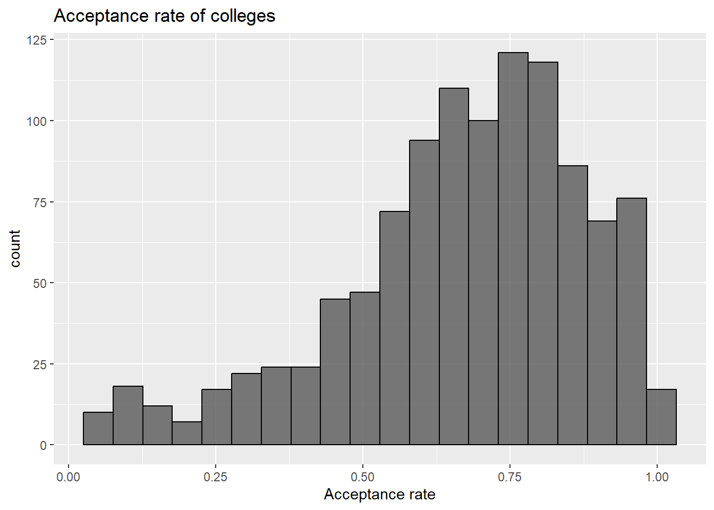

Chapter 4 Results
4.1 Gender diversity Analysis
## [1] "Average percentage of men applicants:"## [1] 0.4295204## [1] "Average percentage of women applicants:"## [1] 0.5696753## [1] "Average percentage of admitted men:"## [1] 0.4241928## [1] "Average percentage of admitted women:"## [1] 0.5758072This shows that gender distribution seen in applications is being carried forward to gender distribution in admitted students. This points to no bias in the college admission process. In addition, we see that on average, percentage of women applicants is 57% as opposed to the 42%-43% in men, and this trend is carried onto the admitted students.
4.2 Acceptance rate
When applying for colleges, one of the key principle is to not put all your eggs into one basket. We divide the colleges we apply into Reach, Fit and Safety colleges or you might have heard of Dream, Target and Safety schools. No matter what you call them, the principle is to increase your chances by applying strategically. For this purpose, we look at acceptance rates of different colleges. Acceptance rate of a college is the percent of students that are admitted out of the students that applied.

This shows that very few colleges have an acceptance rate below 25%, and these very selective schools are expected to be higher ranked colleges. We further analyse the admission statistics and college resources for these colleges againt the remaining colleges. These colleges are stored in a new dataframe acc20. The remaining schools have high acceptance rates, around 75%. Higher acceptance rate points to lower applications or higher admissions or both.
## [1] "Only 54 colleges have an acceptance rate below 25 percent."4.3 Admission yield
To compare colleges, we analysed the admission yield of each college. This is the percentage of students that enrolled at the college out of all students that were admitted. A higher admission yield means most students that are admitted end up enrolling at the college.
This plot shows that colleges with higher acceptance rate (probably higher rated colleges) have higher yield than most of the other colleges that are clustered around the yield of 20%. But yield also has a tradeoff with the cost of attendance of the univeristy. The admission yield is expected to be lower when the cost of attendance goes up. This is what we see when the colleges with lower acceptance rate have a lower yield than expected due to higher cost, and colleges with higher acceptance rate have a higher yield than expected due to lower costs. We will analyse costs of attendance in more details further in this project.
4.4 Test Scores
Test scores are one of the most important statistic in ones application, to show their quantitative and verbal skillset. SAT and ACT are the two standardized tests that every highschooler takes. The cummulative 75th percentile scores in these tests for applicants to each college are reported in the survey.
First we analyse the SAT statistics of colleges, againt their acceptance rate.
This plot clearly shows two clusters, one where the average SAT scores are around 1200 for the majority of the colleges and a second smaller cluster above 1500 SAT score for the lower acceptance rate colleges. This supports our hypothesis earlier. The colleges with high SAT scores in the applicants pool are the top ranked colleges, that also have lower acceptance rates. The interactive component will further look at the SAT and ACT statistics for individual colleges.
4.5 Application requirements
While deciding to apply to colleges, we first look at the requirements of the colleges we want to apply to. Our data has requirements for each colleges in 9 fields, Secondary school GPA, Secondary school rank, Secondary school record, Completion of college-preparatory program, Recommendations, Formal demonstration of competencies, Admission test scores and TOEFL (Test of English as a Foreign Language). We decided to analyse the 3 of these that are most important and analysed how they varied for different colleges.
Req - Required Con - Considered but not required Rec - Recommended No - Neither required nor recommended
We see that test scores are either required or considered but not required. Hence, it is suggested that students submit their test scores to improve their chances of admission. For recommendations, it feels like similar proportion of the schools recommend and require it as those schools that dont require it. There are very few colleges that consider but don’t require test scores and require secondary school rank. The portion of the mosaic plot corresponding to no requirement of test scores, recommendations, and secondary school rank is larger than expected.
4.6 Racial diversity analysis
To understand the racial diversity of American Colleges, we visualized box plots for percentage of students of each race.
Hisp - Hispanic AfrAm - Black or African American AmInd - American Indian or Alaska Native NatHaw - Native Hawaiian or Other Pacific Islander
This shows that percent of students White is the majority, with the highest median. Hispanic and African American races are similar, and the next biggest proportion. Asian follows, with very small representation for American Indian, Alaskan Native, Native Hawaiian or Other Pacific Islander.
Further, we analysed the racial diversity along with gender for an average american college. We did this by aggregating the percentage of students of each gender and race across all colleges.
From this plot, we can see that men and women have the same diversity across all races, with women being slightly more in number than men in all races. This is consistent with our initial observation on gender diversity, with women being more in number than men on average, both in applicants and admitted students.
4.7 Student-Faculty Ratio
Student to Faculty ratio is often an important metric to compare colleges, with colleges having a lower ratio being more student friendly than a higher ratio. We compared this ratio for the top colleges with lower acceptance rates as seen above, with ones that have a higher acceptance rate.
Majority of the colleges have a ratio of around 20, with very few having a ratio above 40. As expected, the top colleges (with low acceptance rates) have low student-faculty ratios, showing that they have better resources for their students.
4.8 Cost of attendance analysis
First, we compare the costs for in-state and out-of-state students.
We observe that the cost of attendance for in-state students peaks at a clearly lower value than that for out-of-state students. This clearly favors applying for a few in-state colleges to have a lower cost option. We can further observe that for the top colleges (with lower acceptance rates), both the in-state and out-of-state cost of attendance is high, other than a few outliers. Further, it looks like almost all high costing colleges are these top colleges. This is consistent with what we expect. The top colleges have higher tuition and fees that also acts as a barrier and causes them to have lower yields as we saw above.
We now visualize the effect of geography (state of the college) on the cost of attendance.
We see that states in the north-east have higher average costs of attendance. This maybe due to higher cost of living in NY and surrounding areas. West-cost and east-coast have similar costs with colleges in central America having the lowest costs. This is also a guide to select colleges according to one’s budget.
4.9 Graduation rate analysis
We tried to see how many enrolled students graduate within 4 years
This shows that majority of the students of top colleges (with low acceptance rates) graduate within 4 years. The 4 year graduation rate is significantly higher in top colleges compared to the rest. Most colleges have graduation rates below 50% whereas top colleges often have graduation rates above 75%.
Comparing the graduation rates between men and women:
Most of the points lie above the y=x line, showing that graduation rates for women are greater than men in a majority of the colleges. The data also shows rounding, as percentages are often rounded to the nearest integer.
4.10 Institutional aids and grants
We visualized the Average amount of institutional grant aid awarded to full-time first-time undergraduates and Number of full-time first-time undergraduates awarded institutional grant aid for each college.
We can observe that the colleges that award grant aid to large number of students tend to give a lower amount of aid and colleges that give high amount of aid, award grants to low number of students. Further, majority of the top colleges give the highest amount of grants but to lower number of students. This is again in support of the top colleges, as they give their students higher grants.